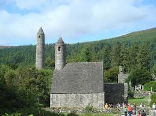
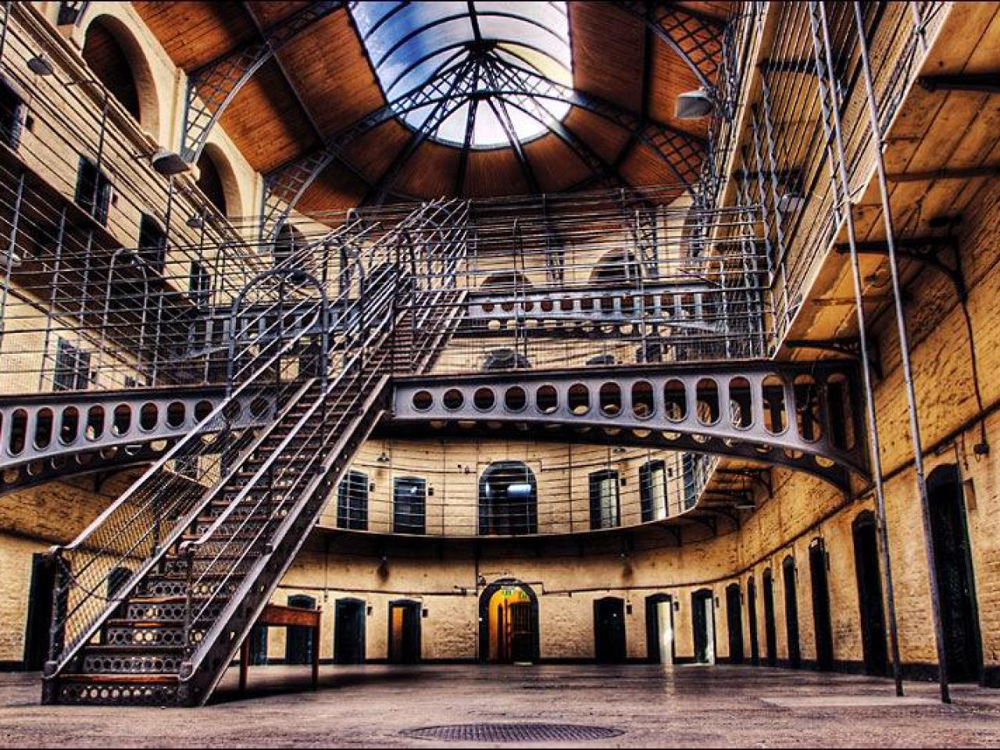
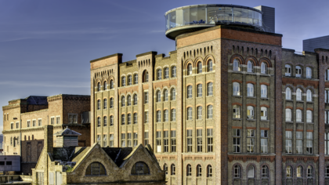
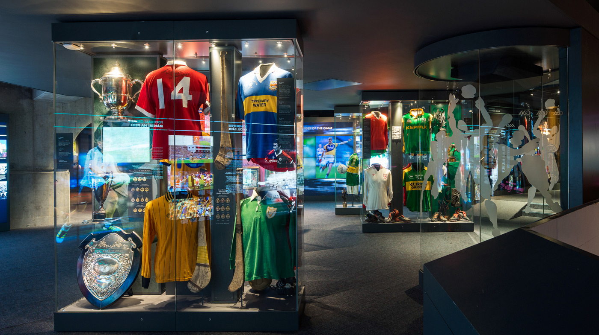

LEINSTER
Places to Eat
Carlow: Sha-Roe Bistro
Kildare: Vie de Châteaux
Kilkenny: Campagne
Laois: Batoni’s
Meath: Zucchini’s
Boyne Valley

The Boyne Valley is situated in the east of Ireland. It is at once Ireland’s ancient capital and it’s most sacred and mythical landscape.
In 1849 William Wilde, father of Oscar, wrote of the Boyne that the history of Ireland may be traced through its monuments. In one day you can visit the great prehistoric tombs at Brú na Bóinne (Newgrange) and the site of the infamous Battle of the Boyne.
Some attractions in the Boyne Valley include The Hill of Tara, Newgrange Passage Tomb and Trim Castle.
Glendalough

Glendalough is home to one of the most important monastic sites in Ireland. This early Christian monastic settlement was founded by St. Kevin in the 6th century
Kilmainham Gaol

Kilmainham Gaol is a former prison in Kilmainham, Dublin, Ireland. It is now a museum run by the Office of Public Works, an agency of the Government of Ireland
A tour of it includes viewings of the cells of former inmates Countess Markiewicz, Padraic Pearse and Robert Emmett.
Guinness Storehouse

Brewery experience telling the tale of Ireland's famous beer, with tastings and a rooftop bar.
Croke Park

Museum of Gaelic sports (Gaelic football, hurling, handball and camogie) with interactive exhibits.